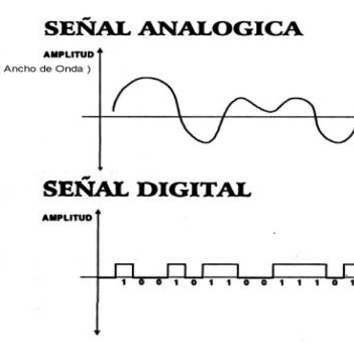

Tanto el texto de un libro, la música guardada en un disco de vinilo, o un casete se considera información guardada de forma analógica. Esta información es vulnerable al paso del tiempo y se deteriora con el uso.
Claro que el medio que almacena la información digital si puede deteriorarse (discos duros, memorias flash, etc) Cualquier información guardada en un medio físico es vulnerable.
Un punto a favor para la información analógica, es que la perdida de información en un soporte digital puede ser más catastrófica que en un medio analógico.
Hay una forma de convertir información analógica en digital, la digitalización. Ya sean imágenes, documentos, sonidos o videos, todos estos se pueden convertir en formato digital, que puede ser almacenado y procesado por computadores en otros dispositivos electrónicos. Este también permite una mayor accesibilidad y disponibilidad de la información y reduce el espacio y el costo que conlleva el almacenamiento físico y otros materiales analógicos.
